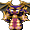
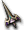
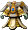

進化森巴之猴
進化森巴之猴
我們伺服器實際的怪物設定（不是日版 wiki 的資料）。
能力值
| 項目 | 本伺服器 | 日版 wiki |
| 等級 | 90 | - |
| HP | 7400～7700 | - |
| AC | 25 | - |
| MC | 50 | - |
| AAR | 11 | - |
| SAR | 15 | - |
| STR | 40 | - |
| DEX | 30 | - |
| INT | 30 | - |
| WIS | 30 | - |
| CON | 40 | - |
| 經驗值 | 3600 | - |
| 名聲值 | 30 | - |
| 金錢 | 200 | - |
| 攻擊屬性 | 隨機 | - |
| 防禦屬性 | 隨機 | - |
出現地圖
| 地圖 | 數量 | 出現位置 |
| 海賊群島15 | 15 | 整張地圖 |
| 海賊群島16 | 15 | 整張地圖 |
掉落物品
| 道具 | 基本機率 |
 森巴沙鈴 森巴沙鈴 | 4.5% |
 海賊群島眼球[聖] 海賊群島眼球[聖] | 1% |
 環境術 環境術 | 0.5% |
 紡金赫寧 紡金赫寧 | 0.1% |
 紡金卡洛特 紡金卡洛特 | 0.1% |
 艾爾馬斯彎刀 艾爾馬斯彎刀 | 0.05% |
 弓手護膝 弓手護膝 | 0.05% |
 凱托卡夫坦 凱托卡夫坦 | 0.05% |
 暗黑復仇者長靴 暗黑復仇者長靴 | 0.05% |
 暗黑復仇者手套 暗黑復仇者手套 | 0.05% |
 紫色之冠 紫色之冠 | 0.05% |
| 紫色之冠(橙) | 0.05% |
| 紫色之冠(黑) | 0.05% |
 紫色后冠(黃) 紫色后冠(黃) | 0.05% |
 歐佩爾之板甲 歐佩爾之板甲 | 0.05% |
 斯坎達倫之緊身衣 斯坎達倫之緊身衣 | 0.05% |
 斯坎達倫之法衣 斯坎達倫之法衣 | 0.05% |
 歐佩爾之外袍 歐佩爾之外袍 | 0.05% |
| 斯坎達倫之守護甲 | 0.05% |
| 不穩定的斯坎達倫之守護甲 | 0.05% |
 不穩定的斯坎達倫之女板甲 不穩定的斯坎達倫之女板甲 | 0.05% |
 生鏽的斯坎達倫之女緊身衣 生鏽的斯坎達倫之女緊身衣 | 0.05% |
| 不穩定的斯坎達倫之女緊身衣 | 0.05% |
 斯坎達倫之拉皮內斯 斯坎達倫之拉皮內斯 | 0.05% |
 生鏽的斯坎達倫之卡夫坦 | 0.05% |
 不穩定的斯坎達倫之斧 不穩定的斯坎達倫之斧 | 0.05% |
 生鏽的斯坎達倫之腰帶 生鏽的斯坎達倫之腰帶 | 0.05% |
| 不穩定的斯坎達倫之腰帶 | 0.05% |
 不穩定的斯坎達倫之短劍 不穩定的斯坎達倫之短劍 | 0.05% |
 生鏽的斯坎達倫之耳環 生鏽的斯坎達倫之耳環 | 0.05% |
 生鏽的斯坎達倫之槍(單手) | 0.05% |
 生鏽的斯坎達倫之法冠 生鏽的斯坎達倫之法冠 | 0.05% |
 腐朽的魔力石耳環 腐朽的魔力石耳環 | 0.05% |
 冰凍護肩-壹式 冰凍護肩-壹式 | 0.05% |
 冰凍之劍-壹式 冰凍之劍-壹式 | 0.05% |
 冰凍寶珠-壹式 冰凍寶珠-壹式 | 0.05% |
 冰凍長槍-壹式 冰凍長槍-壹式 | 0.05% |
 生鏽的帕爾塞斯之板甲 生鏽的帕爾塞斯之板甲 | 0.05% |
 帕爾塞斯之外袍 | 0.05% |
| 不穩定的帕爾塞斯之外袍 | 0.05% |
 帕爾塞斯之守護甲 帕爾塞斯之守護甲 | 0.05% |
 帕爾塞斯之精煉衣 帕爾塞斯之精煉衣 | 0.05% |
 帕爾塞斯之女緊身衣 帕爾塞斯之女緊身衣 | 0.05% |
| 帕爾塞斯之女緊身衣 | 0.05% |
 帕爾塞斯之女聖袍 帕爾塞斯之女聖袍 | 0.05% |
 帕爾塞斯之女外袍 帕爾塞斯之女外袍 | 0.05% |
| 生鏽的帕爾塞斯之女外袍 | 0.05% |
| 不穩定的帕爾塞斯之女外袍 | 0.05% |
| 帕爾塞斯之卡夫坦 | 0.05% |
 不穩定的帕爾塞斯之彎刀 不穩定的帕爾塞斯之彎刀 | 0.05% |
| 不穩定的帕爾塞斯之短劍 | 0.05% |
 不穩定的帕爾塞斯之指虎 不穩定的帕爾塞斯之指虎 | 0.05% |
| 索爾之戒 | 0.05% |
 大師精煉 大師精煉 | 0.05% |
 [商店用]忿怒之擊 [商店用]忿怒之擊 | 0.1% |
| [商店用]尼特拉斯治療術 | 0.1% |
基本機率再乘上伺服器的掉寶倍率；「隨機一件」是從一組道具裡抽一件。